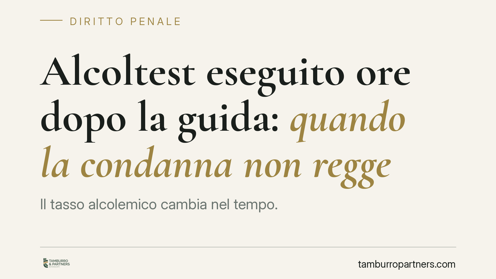

Alcoltest eseguito ore dopo la guida: quando la condanna non regge
Il tasso alcolemico cambia nel tempo. Una recente pronuncia della Cassazione Penale ha ribadito che un valore rilevato molte ore dopo l'incidente non dimostra, di per sé, lo stato di ebbrezza al momento della guida. Serve una valutazione scientifica del dato, non la sua applicazione automatica. Un principio che incide sulla tenuta probatoria di molte contestazioni ex art. 186 del Codice della Strada.

Il caso
Un automobilista viene condannato per guida in stato di ebbrezza sulla base di un accertamento del tasso alcolemico eseguito diverse ore dopo un incidente. La Corte d'Appello conferma la condanna trattando il valore rilevato come prova diretta dello stato di ebbrezza alla guida.
La Cassazione Penale ha annullato quella decisione. Il punto è semplice ma spesso trascurato: il tasso alcolemico non è una costante. Varia nel tempo secondo la fase di assorbimento e di eliminazione dell'alcol. Un valore misurato a distanza di ore non coincide con quello presente nel sangue nel momento in cui il soggetto era alla guida.
Inquadramento normativo
L'art. 186 del Codice della Strada punisce chi guida in stato di ebbrezza e articola le sanzioni su tre fasce di tasso alcolemico: da 0,5 a 0,8 g/l (illecito amministrativo, non reato), da 0,8 a 1,5 g/l e oltre 1,5 g/l (fasce penali, con pene progressive).
Va chiarito un punto spesso frainteso: sotto 0,5 g/l non sussiste alcun illecito, né penale né amministrativo, per il conducente ordinario. Fanno eccezione i neopatentati, i conducenti under 21 e chi esercita professionalmente l'attività di trasporto, per i quali vige il limite di tolleranza zero.
La soglia rileva, quindi, al momento della guida. Ed è qui che il fattore tempo diventa decisivo: provare il superamento della soglia richiede che il dato sia riferibile a quel preciso momento, non a un'ora qualsiasi successiva.
Il nodo del calcolo retrogrado
Per stimare il tasso alcolemico a ritroso, la medicina legale utilizza criteri di calcolo basati sui coefficienti di eliminazione dell'alcol, tra cui il metodo associato alla formula di Widmark. In linea teorica consente di risalire dal valore misurato a quello presente ore prima.
Va però detto con onestà che la giurisprudenza su questo punto non è univoca. Il calcolo a ritroso dipende da numerose variabili individuali — peso, sesso, tempi e modalità dell'assunzione, presenza di cibo — che ne rendono il risultato una stima, non una certezza. Diverse pronunce hanno valorizzato la sua utilità; altre ne hanno sottolineato i limiti probatori. Il principio che emerge dalla pronuncia in esame è prudente: il dato tardivo non può essere trasformato automaticamente in prova dell'ebbrezza alla guida senza una valutazione tecnica che ne discuta affidabilità e margini di errore.
Implicazioni pratiche
Per chi è destinatario di una contestazione ex art. 186 CdS, la distanza temporale tra il fatto e l'accertamento non è un dettaglio. Se tra la guida e il prelievo o l'alcoltest sono trascorse molte ore, il valore rilevato va contestualizzato, non dato per scontato.
Questo non significa che un accertamento tardivo sia sempre inutilizzabile. Significa che la sua forza probatoria deve essere dimostrata, non presunta. L'accusa deve spiegare perché quel dato sia riferibile al momento della guida; la difesa può legittimamente eccepirne l'inidoneità in assenza di una ricostruzione scientifica.
Attenzione, però, a non sovrastimare la portata del principio. La pronuncia non assolve chi guida dopo aver bevuto: incide sul piano della prova, non su quello della responsabilità sostanziale. Chi si mette alla guida alterato commette comunque una condotta pericolosa e sanzionabile quando il dato è solido.
Cosa fare in concreto
- Annotate l'ora esatta dell'incidente e dell'accertamento alcolemico: la distanza temporale è un elemento difensivo centrale.
- Chiedete copia del verbale completo e della documentazione sanitaria, verificando orari, modalità e strumenti utilizzati.
- Non ammettete circostanze su tempi e quantità di assunzione senza prima consultare un difensore: incidono direttamente su eventuali calcoli tecnici.
- Valutate la nomina di un consulente medico-legale, utile a discutere l'affidabilità del dato e dei metodi di stima a ritroso.
- Rivolgetevi tempestivamente a un legale: i termini per impugnazioni ed eccezioni sono rigidi e la tempestività incide sull'efficacia della difesa.
Il messaggio di fondo è di metodo, non di impunità: nel processo penale la prova deve essere certa e riferibile al fatto contestato. Un numero, anche quando tecnicamente corretto, vale solo se dice qualcosa sul momento che conta.
Ogni condominio ha una storia a sé.
Se gestisci un'amministrazione e vuoi un confronto su una specifica questione condominiale, scrivi allo studio. Ti rispondiamo entro un giorno lavorativo.